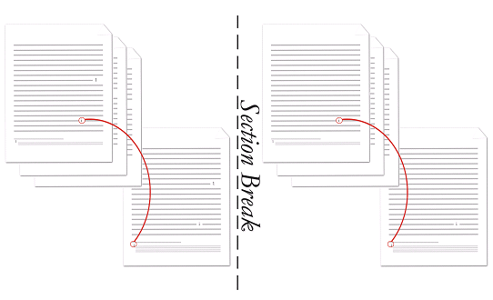

[Table of Contents] [docx version]
WordprocessingML Reference Material - Table of Contents
pos (Endnote Placement)
This element specifies where endnotes shall be placed on the page when they are referenced by text in the current document.
If this element is present at the section level, then it shall be ignored.
If this element is omitted at the document level, then endnotes shall be located at the end of the document.
[Example: Consider the following multi-page, multi-section document, where the endnote appears at the end of the section in which it is referenced:

The endnote setting is the same for all sections, and is represented by the following WordprocessingML at the document level:
<w:settings>
…
<w:endnotePr>
<w:pos w:val="sectEnd" />
…
</w:endnotePr>
…
</w:settings>
Within the properties of the document, the position of endnotes is specified to be at the end of each section. end example]
|
Parent Elements |
|
Attributes |
Description |
|
val (Endnote Position Type) |
Specifies the position of endnotes on the parent section or the document.
[Example: Consider a document in which endnotes shall be positioned at the end of the section. The section properties for this section shall be declared as follows:
<w:settings> <w:endnotePr> <w:pos w:val="endSect" /> </w:endnotePr> … </w:settings>
The val attribute is endSect, therefore the position of endnotes is specified to be at the end of the section. end example]
The possible values for this attribute are defined by the ST_EdnPos simple type (§2.18.26). |
The following XML Schema fragment defines the contents of this element:
<complexType name="CT_EdnPos">
<attribute name="val" type="ST_EdnPos" use="required"/>
</complexType>